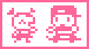
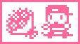
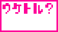
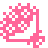
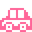
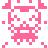
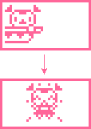

<HTML><BODY>
<CENTER>
<TABLE WIDTH=640 BACKGROUND="header.gif">
<TR><TD HEIGHT=82>&nbsp &nbsp<A HREF="index.html"></A></TD></TR></TABLE>
</BODY></HTML><HTML>
  <HEAD>
   <TITLE>Arukotchi translated!</TITLE>
   <LINK REL=stylesheet HREF="styles.css" TYPE="text/css">
  </HEAD>
  <BODY BACKGROUND="stars.gif" bgproperties="fixed">
    <CENTER>
    <TABLE WIDTH=640 BACKGROUND="aru/aru_back.gif" BORDER=2px BORDERCOLOR="#669966">
     <TR>
      <TD><B CLASS="first">3. Meeting a gotchi-boy</B><BR>
  While you are walking, you have a chance of meeting a gotchi-boy.  There are 15 different gotchi-boys in total.<BR><BR>
  <CENTER>
     <BR>
  When you meet a gotchi-boy you will be able to decide whether you want to give him your name or not.  Press the Y button to tell him, or press the N button to ignore him.<BR><BR>
  <TABLE BORDER=1>
    <TR>
      <TD BGCOLOR="#ff6699" WIDTH=50%><FONT  COLOR="FFFFFF">Which gotchi-boy you meet will depend on your health and beauty ratings!</TD>
      <TD>                        </TD>
      <TD BGCOLOR="#ff6699"><FONT COLOR="FFFFFF">It's ok to not give your name to certain gotchi-boys</TD>
    </TR>
    <TR>
      <TD BGCOLOR="#ffffff"><FONT SIZE=2 COLOR="#ff6699">Among the different kinds of gotchi-boys, there are ones who prefer healthy gotchi-girls, ones who prefer beautiful gotchi-girls, and ones who don't really care about health or beauty.</TD>
      <TD>                        </TD>
      <TD BGCOLOR="#ffffff"><FONT SIZE=2 COLOR="#ff6699">Particularly in the case of the Devilgotchi, you may not want to give out your name to certain gotchi-boys because they may pester you with lots of annoying 'approaches'.  It's best not to give your name to these kinds of gotchi-boys.</TD>
    </TR>
  </TABLE></CENTER>
 <BR><BR>
  <B CLASS="first">4. The Gotchi-Boy's Approach</B><BR>
  Gotchi-boys to whom you have told your name will try many different kinds of approaches.   They'll treat Arukotchi like a queen!  But sometimes when you think they're approaching you, they'll really be giving something to Ohimetchi!<BR><BR><BR>
  <CENTER>     <BR></CENTER>
  You will be able to decide whether you want to accept his advances by pressing the Y button to accept the gift, or the N button to refuse it.  When you accept a gift from a gotchi-boy, your love-love rating with him will go up!<BR>
  <BR><BR><CENTER>
  <TABLE CELLPADDING=10>
    <TR>
      <TD BGCOLOR="#ff6699" COLSPAN=4><FONT FACE="comic sans ms" COLOR="#FFFFFF"><CENTER>The 4 different Approaches:</TD>
    </TR>
    <TR>
      <TD><FONT FACE="arial" COLOR="ff6699"><CENTER><BR>Love Letter</TD>
      <TD><FONT FACE="arial" COLOR="ff6699"><BR>Bouquet</TD>
      <TD><FONT FACE="arial" COLOR="ff6699"><BR>Drive</TD>
      <TD><FONT FACE="arial" COLOR="ff6699"><BR>Ring</TD>
    </TR>
  </TABLE>
  <BR><BR>
  <TABLE BGCOLOR="#ff6699">
    <TR>
      <TD COLSPAN=3><CENTER><FONT FACE="arial" COLOR="#FFFFFF"><H3>1000, 5000, 10000 steps will make Arukotchi celebrate!</H3></TD>
    </TR>
    <TR>
      <TD>  </TD>
      <TD><FONT FACE="arial" COLOR="#FFFFFF">When your steps-counter reaches 1000, Arukotchi will celebrate! [basically she jumps up and down and beeps]  She will do the same thing when the counter reaches 5000 and 10000 steps and for every 5000 steps after that.  Keep walking and make Arukotchi happy!</TD>
    </TR>
  </TABLE></CENTER>
<BR><BR>
  <B CLASS="third">The two-shot screen becomes a diary!</B> <BR>
  After you've accepted a proposal from a gotchi-boy, the two-shot screen will automatically record it.  In order to save power on the battery, only 15 different scenes will be saved.  To see the two-shot screen, press the N button to bring up the clock screen, then press the N button again to bring up the two-shot screen.<BR><BR>
  <CENTER>
  <TABLE>
    <TR>
      <TD><CENTER><BR></TD>
      <TD VALIGN="top"><FONT COLOR="ff6699" >[This is the proposal screen.  To accept,<BR>press the Y button.  To refuse, press the N button]<BR><BR><BR><BR><BR><FONT SIZE=4><B>The rumoured two-shot screen!</B><BR><FONT SIZE=3>Can you collect all 15 different scenes?<BR><BR><BR><FONT SIZE=4><B>Let's go again!</B><BR><FONT SIZE=3>After a proposal is recorded on the two-shot screen,<BR>Arukotchi will start her quest all over again.  Which<BR>gotchi-boys will she meet this time...</TD>
    </TR>
  </TABLE>
<BR><A HREF="arukotchi4.html"></A> <A HREF="arukotchi6.html"></A>
  </TD>
   </TR>
  </TABLE>
 </BODY>
</HTML>
<HTML><BODY>
<CENTER>
<TABLE WIDTH=640 BACKGROUND="footer.gif">
<TR><TD HEIGHT=58><CENTER><A HREF="index.html"></A></TD></TR></TABLE>
</BODY></HTML>
